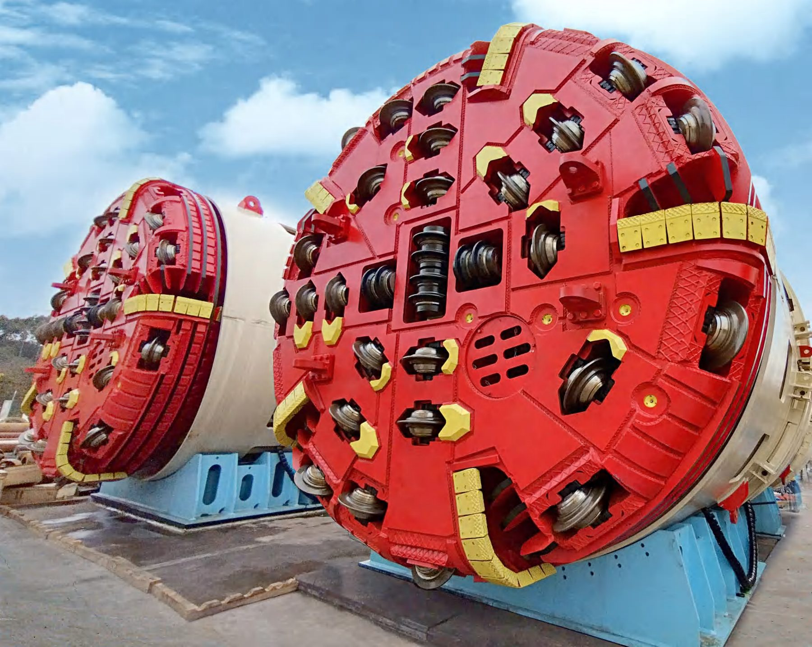
From Super-Diameter TBMs to Smart In-TBM Advance Probing & Heavy-Duty Cutting Tools.
Super-diameter SPB & EPB TBMs, hard-rock dual-mode systems and vertical shaft boring machines — from CCCC Tianhe, a subsidiary of China Communications Construction.
Explore machineryTBM-mounted advance drilling, water-hammer probing, bolting and MWD geological prediction from China Railway Southwest Research Institute — CE-certified rigs for European rock conditions.
Explore probing systems7–21 inch roller cutters, premium metallurgy, tailskin wire brushes & seals and containerized on-site tool workshops from Shandong Tianyou — engineered to the strata, delivered to your jobsite.
Explore cuttersSchematic illustration — project locations are indicative.
Get a single technical interface for TBMs, advance probing equipment and cutter consumables — with European-based support behind every delivery.
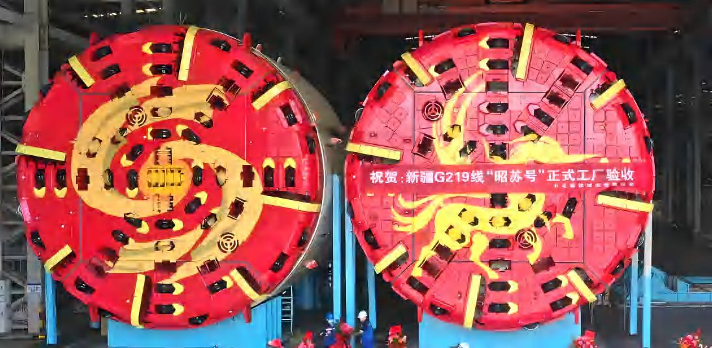
Full-face tunnel boring machines from 0.8 m to 18.4 m — slurry pressure balance, earth pressure balance, hard-rock, dual-mode, vertical shaft and offshore drilling systems.
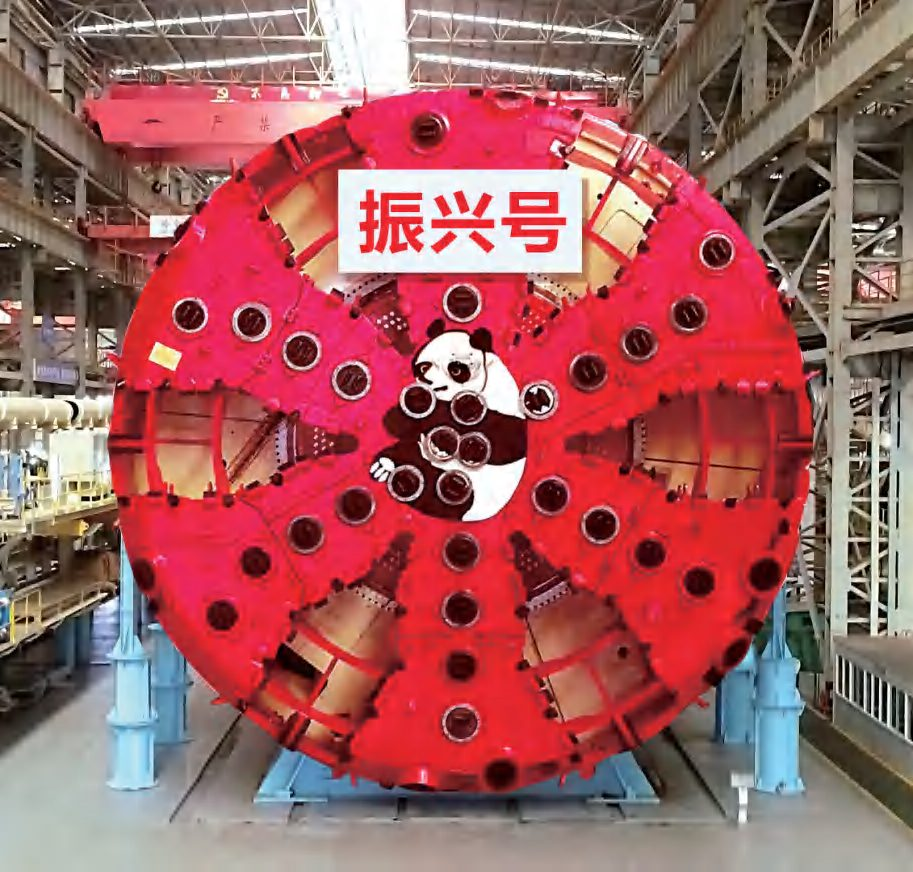
Flagship machines for record-breaking drives, including the Hai-Tai Yangtze River Tunnel ("Cangyuan") and Beijing East 6th Ring Expressway ("Yunhe").
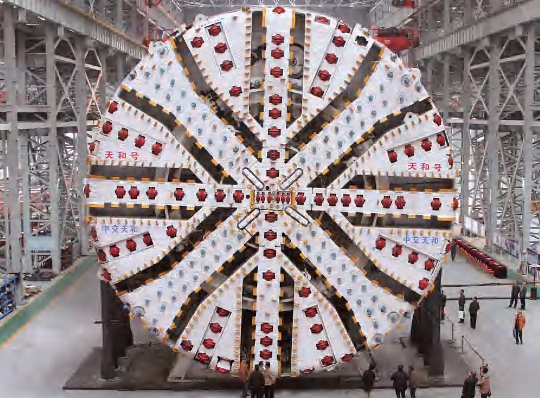
In-house main bearing and key-component manufacturing with full assembly and pressure-testing capability, backed by a full-chain service organization.
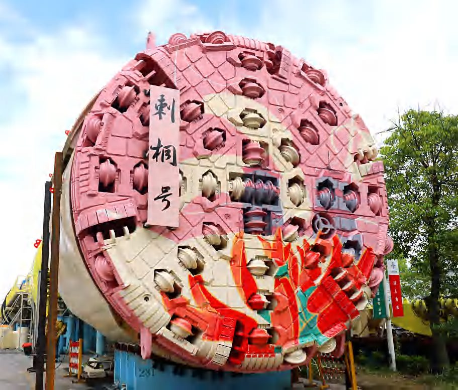
DTSES switchable excavation-supports mode combining extruded-concrete and steel-segment lining, developed for large-deformation and strong-rockburst tunnels.
Machines engineered for alpine-style conditions: Tianshan Shengli Tunnel, G219 Xinjiang and cross-country rail corridors with mixed face and fault zones.
Vertical shaft machines (VSM) including the world's first pressure-drilling vertical boring machine "Shouchuang" used at Tianshan Shengli Tunnel, and "Shudun No.1" for expressway vertical shafts.
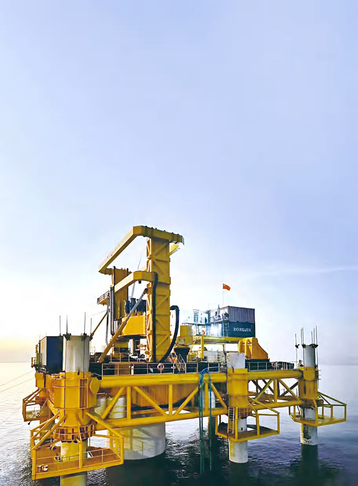
Specialized offshore platforms and subsea tunneling support equipment proven in marine environments from plains to high-altitude regions.
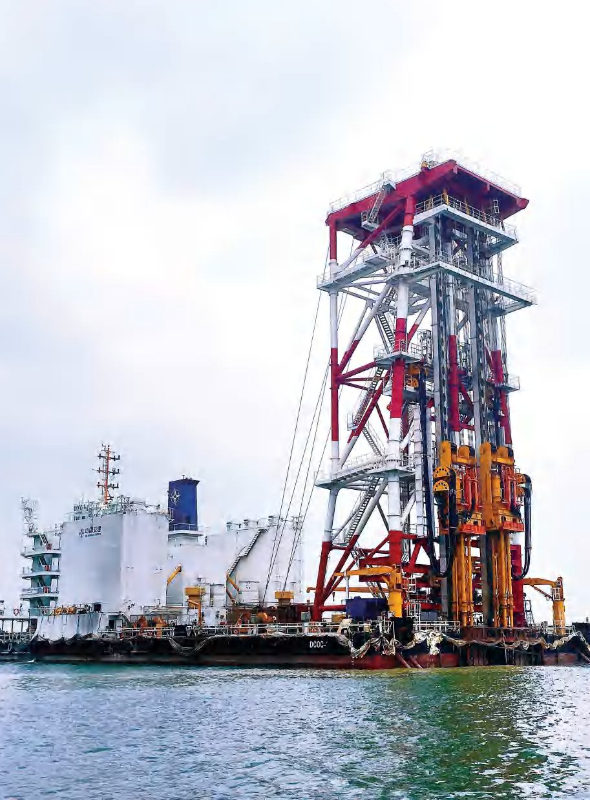
Deep cement mixing (DCM) vessels and emergency-rescue TBMs expand the product envelope beyond conventional tunneling.
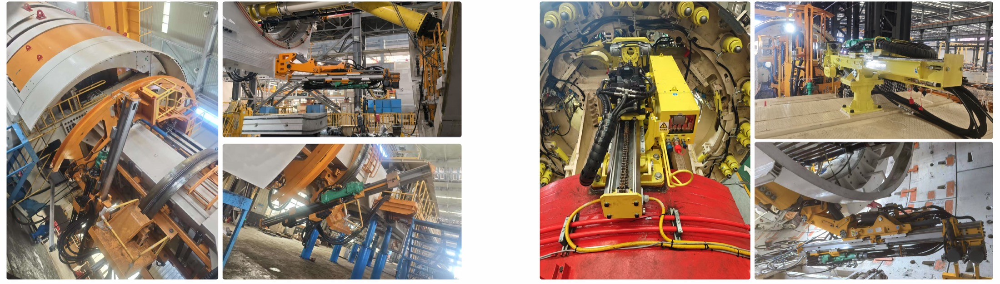
TBM-mounted advance drilling, water-hammer probing, anchoring and MWD prediction — built to de-risk the ground ahead of the cutterhead and to automate the hardest jobs inside the shield.
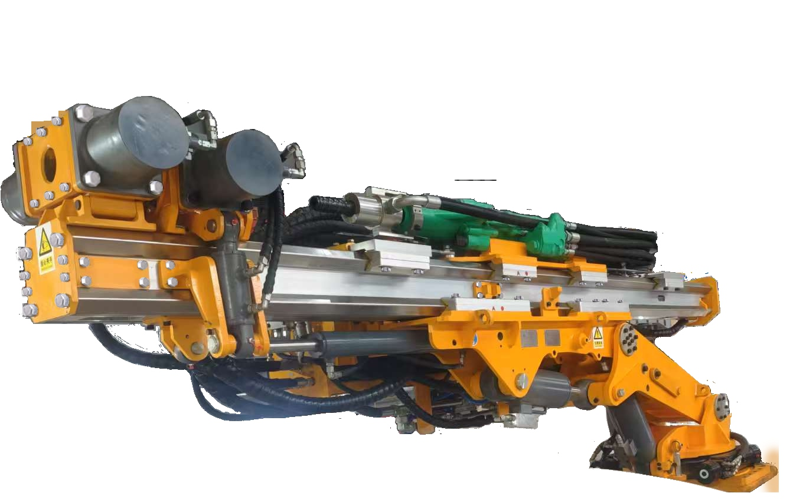
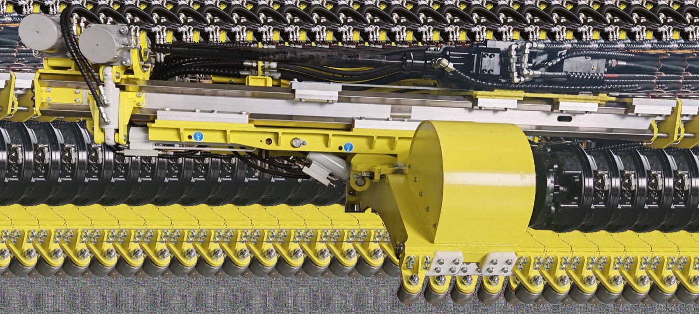
Rod handling, drilling, grouting and parameter logging from a single control station — fewer people in the shield, safer and faster cycles between TBM advances.
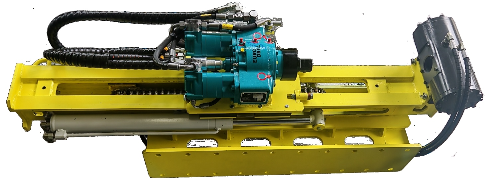
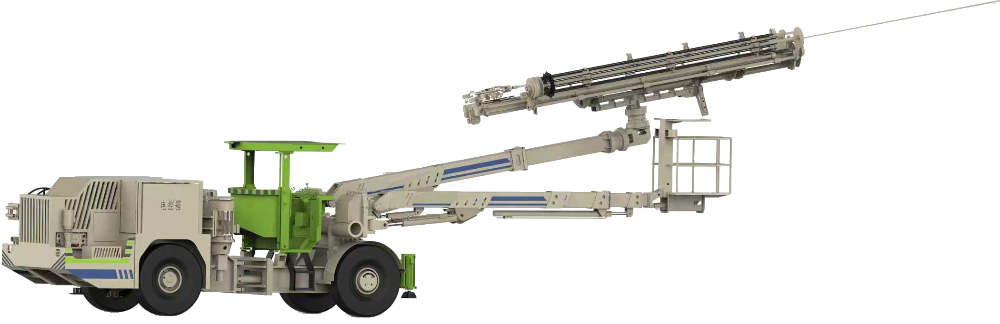
Wireless remote control keeps operators clear of falling rock and high-pressure zones while the machine handles the advance-probe cycle inside the shield.
| Model | Max Depth | Hole Diameter | Rotation Speed | Torque | Water Pressure | Power Pack | Hammer / Head |
|---|---|---|---|---|---|---|---|
| WR-WD50 | < 80 m | D60 / D64 | 150 rpm | 292 Nm | 50 – 170 bar | 55 kW | Wassara / Eurodrill |
| WR-WD70 | < 200 m | D82 / D89 | 596 rpm | 4,420 Nm | 60 – 180 bar | 110 kW | Wassara / Eurodrill |
| WR-WD80 | < 200 m | D95 / D102 | 596 rpm | 4,420 Nm | 60 – 180 bar | 110 kW | Wassara / Eurodrill |
| WR-WD100 | < 250 m | D115 / D127 | 390 rpm | 6,600 Nm | 60 – 180 bar | 130 kW | Wassara / Eurodrill |
TBM-mounted anchor drilling machines that automate drill, feed, grout and pre-tension cycles in narrow, high-risk shield compartments.
Integrated drill-anchor-grout machines combine advance probing, anchoring and grouting in one carrier to shorten support cycles.
SR-HC · SR-BD · WR · TB-HC · TB-RD · ZMG — a complete TBM-mounted portfolio matched to your geology and shield layout.
Turn raw drilling telemetry into actionable geology maps for the crew — plan grouting, adjust TBM parameters and avoid standstill risk.
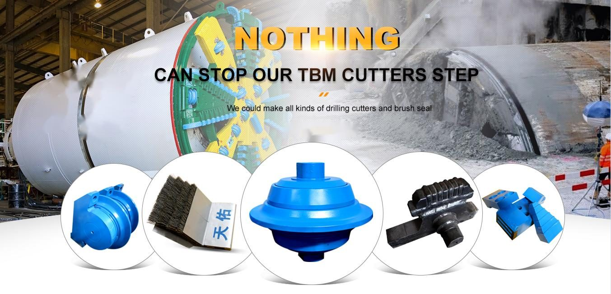
Nothing can stop our TBM cutters — every kind of drilling cutter and brush seal, engineered to the strata and backed by on-site containerized tool workshops.
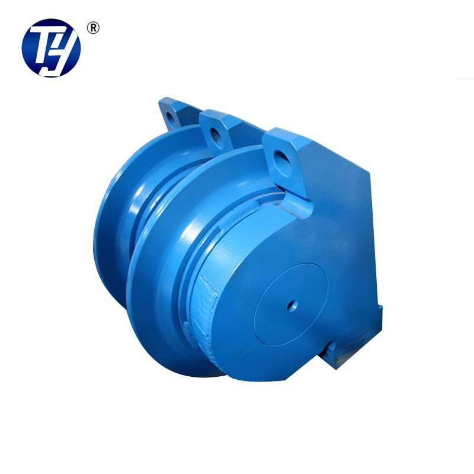
7–21 inch single and twin disc cutters covering face, gauge and center positions of mainstream TBM cutterheads.
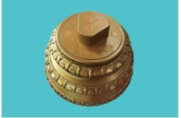
Triple-roller and TCI (carbide insert) cutters for overcutting, abrasive sandstone and highly abrasive strata.
Twin, eccentric and raise-boring disc cutters, plus custom geometries for non-standard cutterheads.
Designed for high-water-pressure environments with bearing capacity above 1.0 MPa — proven in subsea and deep river-crossing drives.
Ultra-heavy-duty cutters with rated load > 400 kN (approx. 40 metric tons) for extremely hard rock (UCS > 200 MPa), plus TCI alloy rings for abrasive sandstones (< 70 MPa).
Rotation- and wear-detection cutters that eliminate false signals of conventional pressure wear detection — fewer blind cutterhead interventions.
Three steel grades — strong wear resistance (G1), conventional (G2), high toughness (G4) — matched to full-face hard rock, all strata and mixed ground.
| Grade | Cr | C | Hardness HRC | Smelting | Best For |
|---|---|---|---|---|---|
| DG-1 (G1) | 8% | 1% | 60–62 | LF+VD + ESR | Full-face hard rock |
| DG-2 (G2) | 5% | 0.5% | 57–59 | LF+VD + ESR | All strata |
| DG-4 (G4) | 5% | 0.4% | 55–57 | LF+VD + ESR | Mixed strata, high toughness |
Heat treatment: vacuum-furnace gas quenching + multiple high-temperature tempering (G2/G4 ≥ 3 cycles, G1 ≥ 4 cycles) + deep cryogenic treatment; circumferential hardness variation ≤ 2 HRC.
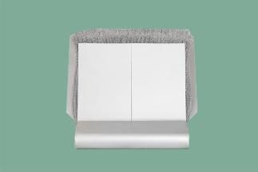
High-pressure tailskin wire brushes and steel-plate seals engineered for slurry and EPB shields, with in-house brush-wire and heat-treatment manufacturing.
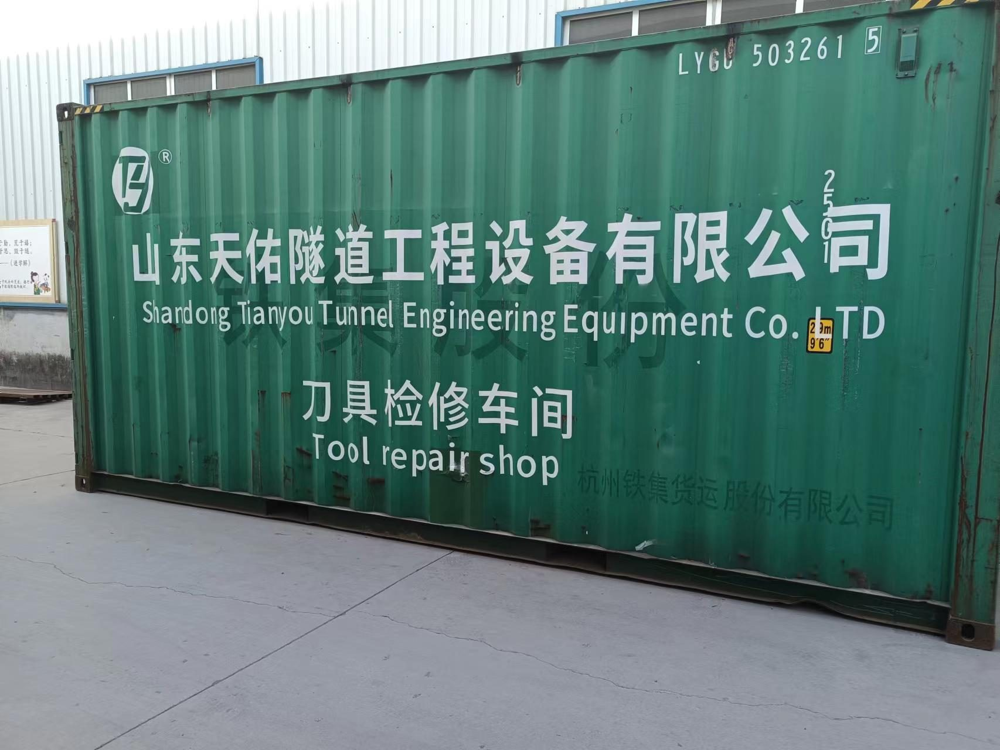
Standard 20/40 ft containers outfitted with hydraulic press, high-frequency heaters, welders, bearing cleaning carts and KBK lifting — air-freighted or shipped directly to your European jobsite.
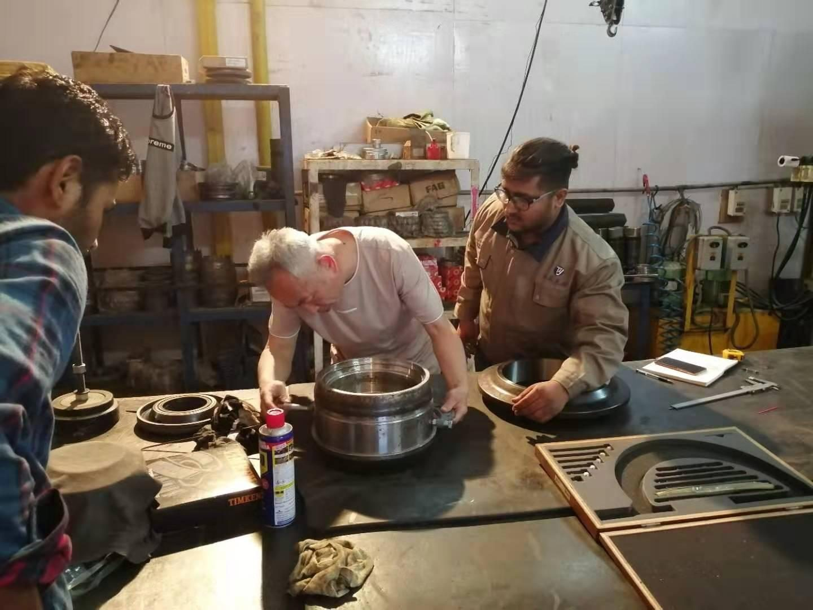
Established overseas maintenance workshops and jobsite engineering — the same model can be deployed across Europe.
Engineer teams design high-performance cutting tools per geological condition to cut contractors' construction cost, with full tool maintenance equipment and engineers on call.
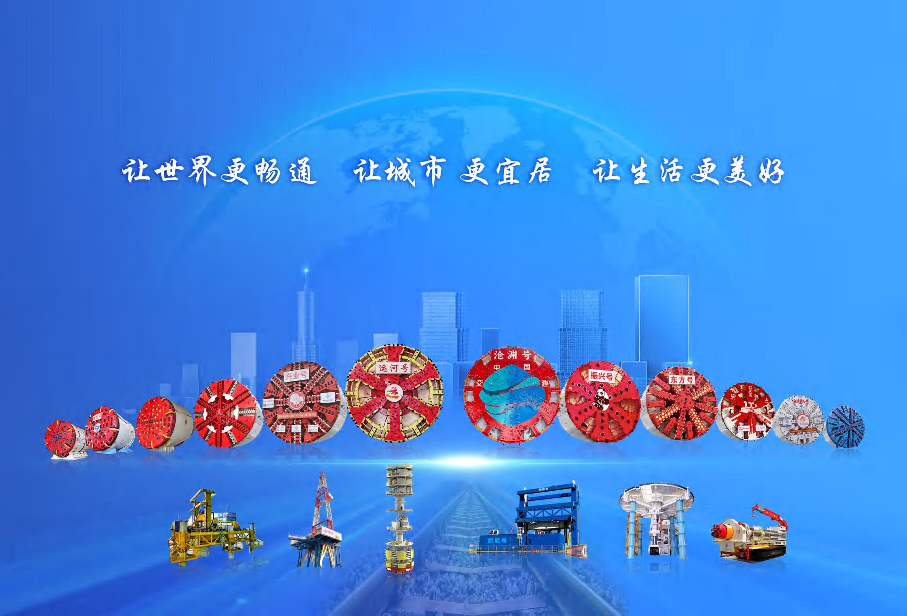
Beyond hardware — lifecycle engineering, decarbonization through remanufacturing, 24/7 field support, and full compliance documentation for European projects.
Remanufactured machines support European green-construction and ESG targets — embodied carbon is retained, new-build emissions avoided.
Restore used TBMs to near-new performance at 30–50% below new-machine procurement cost, with warranty-backed acceptance.
Full teardown, re-engineering, main-bearing replacement and factory acceptance testing before delivery to the European site.
Machinery Directive documentation available for the European market.
Quality, environment and occupational health & safety management systems.
Products certified by the China Quality Inspection Association as national authority-tested, standard-compliant.
Share tunnel geometry, geology (UCS, water, faults) and schedule — one technical interface for all three product lines.
Machines, probing packages and cutter matrices engineered to your strata, with commercial proposal and lead times.
Factory acceptance testing, compliance documentation and third-party inspection on request.
Sea/air freight, customs coordination and site handover with containerized workshop options.
24/7 support, training, spare cutters and brushes stocked for rapid European dispatch.
Tell us about your tunnel — we will route your inquiry to the right engineering team and come back with a structured technical response.
Form fields marked with * are required. Submitting this demo form opens your mail client with the request pre-filled — replace the recipient with your sales inbox before launch.